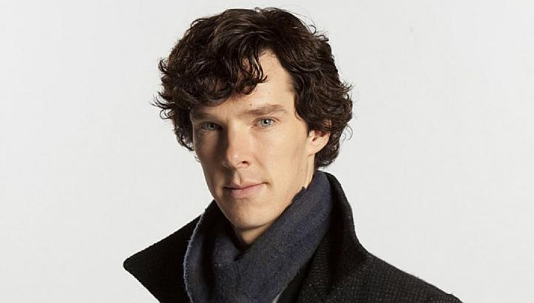

Character BiographyDiscuss Sherlock Holmes is the legendary great detective who solves even the most baffling cases with astute observation, deductive reasoning and very little people skills

John H. Watson, known as Dr. Watson, is a fictional character in the Sherlock Holmes stories by Sir Arthur Conan Doyle. Watson is Sherlock Holmes' friend, assistant and sometime flatmate, and the first person narrator of all but four of these stories.

Professor James Moriarty is a fictional character in some of the Sherlock Holmes stories written by Sir Arthur Conan Doyle. Moriarty is a criminal mastermind whom Holmes describes as the "Napoleon of crime".